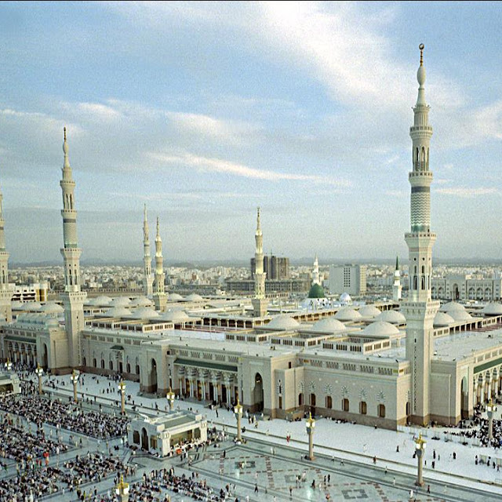

I was born and raised in Jeddah, Saudi Arabia. KSA is one of the largest State in the Western Asia by Land Area.
Jeddah is second largest city in the Kingdom after the capital city of Riyadh.
Also, the birth place of Islam and Home of two Holiest Shrines.
Here is the image of the Holy city Makkah:

Here is the image of the Holy city Madinah:
Founded by Abdul Aziz Bin Saud in 1932.

Population: ~ 31 Million approximately
Climate: Harsh and Dry Desert with great temperature extreme.
National Anthem: Aash Al Maleek (Long Live Our Beloved King).